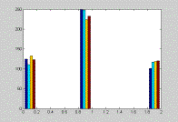
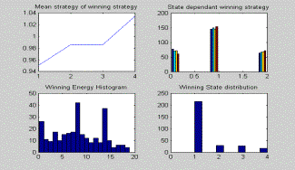
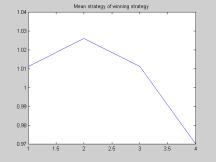
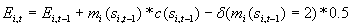
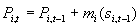

Go Lance!
Dan Li and Matt Grossmann
|
Go Lance! Dan Li and Matt Grossmann |
| This summarizes a simple model of bike race strategy created at the summer workshop on computational social science modeling in Santa Fe, NM in July, 2004. It is only a prototype model and we invite you to explore. If you would like to look through our powerpoint presentation, please click here. |
The Simple Version: Our Basic Bike Race Model
In our first model, the raceway is a 100 space vector. At each step, agents
move forward one space or do not move forward on the vector. Agents have a strategy
for moving in four possible states: with someone in front or no one in front
and with someone in back or no one in back. This makes for 16 possible strategies.
Agents have a total amount of energy (150) and pay a cost each time they move.
The largest cost is paid by agents with no one in adjoining spaces (3), the
second largest cost is paid by a leader with no one in front of them (2), and
the smallest cost is paid by a follower (1).
Key Assumptions
Since agents have to make a decision about their movement at every stage of
the game, the state space would be massive if we assume that agents can change
strategies over the course of the game. These agents would have to keep track
of all movements in the game and adjust behavior accordingly. Thus, we have
modeled their behavior as time-invariant. Agents use the same state-dependent
strategy at every step in the race and do not adapt to other agents’ strategies.
They therefore often continue to use unsuccessful strategies. A second important
assumption to our model is that there is no limit to the number of agents on
each space. The model does not include any dynamics associated with passing
or sharing a space.
Initial Results
The simple model did not produce very interesting results but we can report
a few important findings. When all strategies are played by at least one agent,
the most successful strategy is “move unless someone is behind you and
no one is in front of you.” The four most successful strategies all include
moving when someone is in front of you, no matter who is behind you. When only
successful strategies are used by all the agents, however, there is a universal
tie with all agents moving in each round.
Limitations
The model is not very realistic. If strategies are determined randomly, as they
are in this model, many agents do not move at all. A second limitation is that
many agents can win each race, especially those with similar strategies. Because
agents can only move one space at a time, there is no way to jump ahead of another
rider. This limitation reduces the dynamics of the race.
Increasing the Complexity of the Model: The Three Speed Case
In the simple model, the strategy space for each agent in each state is only
move or not move {0,1}. In this model, we add one potential move in each space,
aggressive acceleration. The space is now {0,1,2} corresponding to {slow down,
keep pace, accelerate} and there are now 81 possible strategies. The cost function
is zero if they slow down and {-2.1,-2,-1,-1} if they keep pace. If they accelerate,
they can move two spaces and pay twice the cost plus an additional cost of -0.5
for acceleration. We also implement a tie breaking rule where the winning agent
with the most remaining energy is declared the winner.
Initial Results: State Dependent Aggressiveness (Results of a 500-run Simulation)
 |
The graph shows the distribution of strategies for each state
for winning bikers. We find that separate leaders tend to slow down. Group
leaders, in contrast, are slightly aggressive (cost low). Follower strategies
are more volatile and less clear. Some followers use dubious strategies. |
|  | This graph shows the level of aggressiveness across all positions.
The keep pace strategy is more frequently used for all positions. Leaders
are less aggressive than followers. Separate leaders are more likely to
slow down than other leaders. Finally, winning bikers are more aggressive
when they trail. |
Energy Limited Case (E=120)
 |
Next, we lower the total energy that each agent can expend over the race. When preserving energy is important, there is clear change of pattern. The graph on the left shows that aggressiveness is now monotonic with respect to position. Again, winning players are more aggressive followers. In this case, however, leaders have more incentive to preserve energy. |
No Clear Dominant Strategy
In the high energy (E=150) case 76 out of the 81 possible strategies end up in the winning pool over the 500 runs. In the low energy (E=120) case, 68 out of 81 strategies end up in the winning pool. In a non-dynamic game, there is no clearly dominant or dominated strategy due to the large number of players. At later time-steps, however, agents that are clearly behind have no reason to slow down. In the second case, when resources are limited, it is advantageous to be slightly aggressive while following and less aggressive while leading.
Winner Characteristics

Most winners use up nearly all their energy by the end of the match. Even more
winners use their energy optimally than the graph shows because we are selecting
the agent with more energy left to be the winner in the case of a tie. Some
of the potential winners died at the last stage (due to bad budgeting). We can
conceptualize these as sacrifice bikers; they made it possible for the winner
to win by reducing their energy cost right up until the final move.
Tie problem
Allowing ties reduces strategic interplay. The negative externalities of the
players’ strategies are low because my strategic choice does not change
your payoff. We would imagine it to be different if we lined them up and allowed
only one person to occupy each position.
Budgeting problem
 |
Without forward looking agents with respect to their budget constraint, most of the agents are over aggressive. They die before the end of the race, having used up their energy. Ideally, we should include more rational adaptation by agents. Agents should avoid leading if they do not have enough energy left to win the race while in front of the pack. |
Mutating Strategies: Adding Higher Aggressiveness
We extended the model by adding the assumption that if agents are at least 2 positions behind the game leader, they have an incentive to change strategies. In our model, they mutate their strategy be selecting another strategy at random. The expected result of the new strategy adoption, however, is that the agents will be more aggressive. For each of the four states, their possibility of choosing to "slow down" is only .1, their possibility of retaining constant speed is .45, and their possibility of becoming more aggressive is .45. Overall strategies are therefore more aggressive after agents fall behind. The model now assumes that agents do care about where they are currently placed but their new strategies are not necessarily advantageous. They just adopt the irrational heuristic of speeding up.
|  |
The result is quite striking. By design, most players except the first two became active and aggressive. It actually became statistically advantageous to slow down when you are at the tail of the pack. This is because the player right front of you has a higher chance of accelerating, which will separate you from the crowd if you either keep pace or slow down. By slowing down, you enhanced your chance of joining the crowd behind you and will be able to take advantage of group benefit. This also says that in a highly irrational (uncertain) competition environment, fitness of a strategy totally depends on the behavior of competitors. |
Planned Extensions
We have another idea for making losing agents more adaptive. If an agent is
more than 2 spaces behind, they could adopt the strategy of the current leader.
We also though about modeling the end-game with backward induction. In our model,
there is a point at which agents should know that they can act strategically
and use their remaining energy. We could also pursue an alternative formulation
where the benefits of wind resistance are treated as capacities to move more
than one step forward. In this case, we could model the amount moved each round
stochastically. Finally, we could include spatial dynamics on a grid and have
agents pay costs for passing.
Next Step Genetic Algorithm
Agents who die in one round could receive a mutated strategy in the next round.
We could simultaneously run many rounds and calculate overall fitness for different
strategies. The winning strategies could then propagate with some modification.
In this case, we could include more than 81 strategies so the agents strategies
could be round-variant. They would have a vector of strategies corresponding
to each move in the game. If we evolved the system and had the best strategies
play against each other, however, we would face problems. Some normally bad
strategies might be good if everyone is playing an optimal strategy against
other optimal strategies.
Potential Applications
We thought of two potential applications of the model, though neither is a close
analogy. First, we could use a version of the model to track technological
development. Both leaders and second-movers have advantages in technological
development and may gain a monopoly at some point but innovations cannot be
too far ahead or behind the pack.
Second, we could model delegate competition for political party nominations.
Candidates gather delegate endorsements in early states but may become the target
of all other candidates if they are identified as the early front-runner. There
are several key dynamics of the model that would have to be relevant to a social
phenomenon for the model to apply. There should be movement in packs, winner-take-all
outcomes, and competitive disadvantages from being the leader by a small margin.
How the Model Works
In case you are interested in how the model is actually implemented in computer code, we provide some "pseudo code" below so that you can understand the dynamics. The game evolves like this:
| Energy Update |  i=1,…20 |
| Position Update |  i=1,…20 |
Check If energy of any player dropped below zero. If so, give these players
a negative position.
State update: check if the position ahead or behind is empty.End loop
Winner characteristics observed.